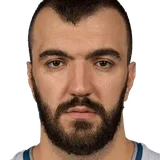

Derrick Williams
2011-12 to 2017-18 · Career Map
 Minnesota,
Minnesota,  Sacramento,
Sacramento,  New York,
New York,  Miami,
Miami,  Cleveland,
Cleveland,  LA Lakers
LA Lakers
His teams reached the NBA Finals once (2016-17) without winning the title. In his 428 games for 6 teams over 7 seasons they went 160–268 (37.4%), −108 games under .500, with an average final finish of 19.9.
Jump to: Record by opponent · Season by season · Teammate help
Compare Derrick Williams with…
Suggested, same era and similar teammate help:


Final NBA finish, season by season
Title Finals Other playoffs Missed playoffs. #1 = champion; the dashed line is last place that season. Each point opens that season's final standings.
All 30 teams ranked in 2016-17, his best finish (#2)Teammate help
- Kevin Love5.02 seasons
 LeBron James5.01 season
LeBron James5.01 season DeMarcus Cousins4.01 season
DeMarcus Cousins4.01 season
Career
Career records (W–L, W − L, with and without) include 2026-27 games through Nov. 23, 2026; season counts and finishes are through 2025-26. Each card opens its board in the same scope. How we count.

Latest completed seasons
Season by season
Newest first; every header sorts. Final NBA finish is the team's rank among all teams that season (#1 = champion) and opens that season's standings. "Without him" uses the team-season window; the span line counts only the games between his first and last game for the team.
| 2017-18 | #21 of 30 | 35–47 42.7% | Missed playoffs | 2 of 82 | 1–1 50.0% | 34–46 42.5%span: 1–0, gap −50.0 | +7.5 | |
| 2016-17 | #17 of 30 | 41–41 50.0% | Missed playoffs | 25 of 82 | 5–20 20.0% | 18–10 64.3%span: 14–7, gap −46.7 | −44.3 | |
| 2016-17 | #2 of 30 | 51–31 62.2% | Lost Finals 1–4 | 25 of 82 | 11–14 44.0% | 6–2 75.0%span: 4–2, gap −22.7 | −31.0 | |
| 2015-16 | #24 of 30 | 32–50 39.0% | Missed playoffs | 80 of 82 | 32–48 40.0% | 0–2 0.0%span: 0–2, gap +40.0 | +40.0 | |
| 2014-15 | #25 of 30 | 29–53 35.4% | Missed playoffs | 74 of 82 | 27–47 36.5% | 2–6 25.0%span: 2–6, gap +11.5 | +11.5 | |
| 2013-14 | #18 of 30 | 40–42 48.8% | Missed playoffs | 11 of 82 | 6–5 54.5% | 2–4 33.3%span: 1–2, gap +21.2 | +21.2 | |
| 2013-14 | #24 of 30 | 28–54 34.1% | Missed playoffs | 67 of 82 | 23–44 34.3% | 1–2 33.3%span: 1–1, gap −15.7 | +1.0 | |
| 2012-13 | #22 of 30 | 31–51 37.8% | Missed playoffs | 78 of 82 | 29–49 37.2% | 2–2 50.0%span: 2–2, gap −12.8 | −12.8 | |
| 2011-12 | #21 of 30 | 26–40 39.4% | Missed playoffs | 66 of 66 | 26–40 39.4% | N/A | N/A |
On/off, starts and close games
From the lineup data, 1996-97 on. On/off is net points per 100 possessions with him on the floor minus off, a different unit from the win-rate gaps. Started and off the bench are team records in those games; close games are those within 5 points in the last 5 minutes with him on the floor.
| 2017-18 | −24.9 | N/A | 1–1 50.0% | N/A | |
| 2016-17 | +1.5 | 3–8 27.3% | 2–12 14.3% | 0–2 0.0% | |
| 2016-17 | −3.4 | N/A | 11–14 44.0% | 2–3 40.0% | |
| 2015-16 | −7.7 | 4–5 44.4% | 28–43 39.4% | 3–7 30.0% | |
| 2014-15 | −7.9 | 1–5 16.7% | 26–42 38.2% | 9–14 39.1% | |
| 2013-14 | −23.3 | N/A | 6–5 54.5% | 0–1 0.0% | |
| 2013-14 | −2.4 | 4–11 26.7% | 19–33 36.5% | 6–12 33.3% | |
| 2012-13 | −4.1 | 20–36 35.7% | 9–13 40.9% | 4–11 26.7% | |
| 2011-12 | −2.3 | 4–11 26.7% | 22–29 43.1% | 7–10 41.2% |
Teammate help by season
Help this season = Teammates Score points for honors won that season by teammates who shared a game with him, with every teammate that adds to it. Only honors won in that same season count. How help works.
- 2017-18
 LA Lakers
LA Lakers
 Kyle Kuzma All-Rookie 1st0.251 g
Kyle Kuzma All-Rookie 1st0.251 g Lonzo Ball All-Rookie 2nd0.1252 g
Lonzo Ball All-Rookie 2nd0.1252 g
Help this season: 0.375 = 0.25 Kyle Kuzma + 0.125 Lonzo Ball
Other teammates (no honors that season): Travis Wear 2 g, Julius Randle 2 g, Kentavious Caldwell-Pope 2 g, Isaiah Thomas 2 g, Brook Lopez 2 g, Alex Caruso 2 g, Ivica Zubac 2 g, Tyler Ennis 1 g
- 2016-17
 MiamiHelp this season: 0, no honored teammate
MiamiHelp this season: 0, no honored teammate - 2016-17
 Cleveland
LeBron James All-NBA 1stAll-Star520 g
Cleveland
LeBron James All-NBA 1stAll-Star520 g Kyrie Irving All-Star121 gKevin Love All-Star110 g
Kyrie Irving All-Star121 gKevin Love All-Star110 g
Help this season: 7 = 5 LeBron James + 1 Kyrie Irving + 1 Kevin Love
Other teammates (no honors that season): Channing Frye 25 g, Richard Jefferson 24 g, Tristan Thompson 22 g, Iman Shumpert 21 g, Kyle Korver 18 g, Deron Williams 18 g, James Jones 17 g, DeAndre Liggins 17 g, JR Smith 14 g, Kay Felder 9 g, Larry Sanders 5 g, Jordan McRae 4 g, Dahntay Jones 1 g, Walter Tavares 1 g and 1 more
- 2015-16
 New York
New York
 Carmelo Anthony All-Star170 g
Carmelo Anthony All-Star170 g Kristaps Porzingis All-Rookie 1st0.2570 g
Kristaps Porzingis All-Rookie 1st0.2570 g
Help this season: 1.25 = 1 Carmelo Anthony + 0.25 Kristaps Porzingis
Other teammates (no honors that season): Langston Galloway 80 g, Robin Lopez 80 g, Jerian Grant 75 g, Jose Calderon 70 g, Arron Afflalo 69 g, Kyle O'Quinn 63 g, Sasha Vujacic 59 g, Lance Thomas 57 g, Kevin Seraphin 47 g, Louis Amundson 28 g, Cleanthony Early 17 g, Thanasis Antetokounmpo 2 g, Jimmer Fredette 2 g
- 2014-15
 Sacramento
DeMarcus Cousins All-NBA 2ndAll-Star452 g
Sacramento
DeMarcus Cousins All-NBA 2ndAll-Star452 g
Help this season: 4 = 4 DeMarcus Cousins
Other teammates (no honors that season): Ben McLemore 74 g, Jason Thompson 73 g, Nik Stauskas 65 g, Ray McCallum 63 g, Carl Landry 62 g, Rudy Gay 60 g, Omri Casspi 59 g, Reggie Evans 41 g, Ryan Hollins 40 g, Darren Collison 39 g, Andre Miller 30 g, Ramon Sessions 29 g, Quincy Miller 5 g, David Stockton 3 g and 3 more
- 2013-14
 Minnesota
Kevin Love All-NBA 2ndAll-Star411 g
Minnesota
Kevin Love All-NBA 2ndAll-Star411 g Gorgui Dieng All-Rookie 2nd0.1259 g
Gorgui Dieng All-Rookie 2nd0.1259 g
Help this season: 4.125 = 4 Kevin Love + 0.125 Gorgui Dieng
Other teammates (no honors that season): Alexey Shved 11 g, Dante Cunningham 11 g, Ricky Rubio 11 g, Nikola Pekovic 11 g, Corey Brewer 11 g, Jose Juan Barea 11 g, Kevin Martin 10 g, Robbie Hummel 8 g, AJ Price 6 g, Shabazz Muhammad 4 g, Ronny Turiaf 1 g
- 2013-14SacramentoHelp this season: 0, no honored teammate
- 2012-13MinnesotaHelp this season: 0, no honored teammate
- 2011-12Minnesota
Kevin Love All-NBA 2ndAll-Star455 g
 Ricky Rubio All-Rookie 1st0.2541 g
Ricky Rubio All-Rookie 1st0.2541 g
Help this season: 4.25 = 4 Kevin Love + 0.25 Ricky Rubio
Other teammates (no honors that season): Wesley Johnson 65 g, Luke Ridnour 53 g, Wayne Ellington 51 g, Anthony Tolliver 51 g, Nikola Pekovic 47 g, Michael Beasley 47 g, Martell Webster 47 g, Jose Juan Barea 41 g, Anthony Randolph 34 g, Darko Milicic 28 g, Malcolm Lee 19 g, Brad Miller 15 g
Record against each opponent
Regular season, through 2025-26 (2026-27 games not included): 428 games, 160–268, against 30 franchises.
Grouped by franchise (named as today); game lists keep each team's name that season. Filters and the tab are kept in the URL, so a filtered view can be shared.
| Games list | |||||||
|---|---|---|---|---|---|---|---|
| 21 | 4–17 | 19.0% | −13 | N/A | 2011-12 to 2016-17 | ||
| 19 | 5–14 | 26.3% | −9 | N/A | 2011-12 to 2016-17 | ||
| 18 | 1–17 | 5.6% | −16 | 0–1 (1–2 in games) | 2011-12 to 2017-18 | ||
| 18 | 7–11 | 38.9% | −4 | N/A | 2011-12 to 2016-17 | ||
| 18 | 7–11 | 38.9% | −4 | N/A | 2011-12 to 2016-17 | ||
| 18 | 5–13 | 27.8% | −8 | N/A | 2011-12 to 2016-17 | ||
| 17 | 7–10 | 41.2% | −3 | N/A | 2011-12 to 2016-17 | ||
| 17 | 9–8 | 52.9% | +1 | N/A | 2011-12 to 2016-17 | ||
| 16 | 5–11 | 31.2% | −6 | N/A | 2011-12 to 2015-16 | ||
| 16 | 9–7 | 56.2% | +2 | N/A | 2011-12 to 2016-17 | ||
| 16 | 4–12 | 25.0% | −8 | N/A | 2011-12 to 2016-17 | ||
| 15 | 6–9 | 40.0% | −3 | 1–0 (3–0 in games) | 2011-12 to 2016-17 | ||
| 15 | 2–13 | 13.3% | −11 | N/A | 2011-12 to 2016-17 | ||
| 14 | 4–10 | 28.6% | −6 | N/A | 2011-12 to 2016-17 | ||
| 14 | 5–9 | 35.7% | −4 | N/A | 2011-12 to 2017-18 | ||
| 14 | 7–7 | 50.0% | 0 | N/A | 2011-12 to 2016-17 | ||
| 14 | 2–12 | 14.3% | −10 | N/A | 2011-12 to 2016-17 | ||
| 14 | 8–6 | 57.1% | +2 | N/A | 2011-12 to 2016-17 | ||
| 14 | 11–3 | 78.6% | +8 | N/A | 2011-12 to 2016-17 | ||
| 12 | 6–6 | 50.0% | 0 | N/A | 2011-12 to 2016-17 | ||
| 12 | 5–7 | 41.7% | −2 | N/A | 2011-12 to 2015-16 | ||
| 12 | 5–7 | 41.7% | −2 | N/A | 2011-12 to 2016-17 | ||
| 12 | 4–8 | 33.3% | −4 | N/A | 2011-12 to 2015-16 | ||
| 12 | 6–6 | 50.0% | 0 | N/A | 2011-12 to 2016-17 | ||
| 11 | 6–5 | 54.5% | +1 | N/A | 2011-12 to 2016-17 | ||
| 11 | 1–10 | 9.1% | −9 | 1–0 (2–0 in games) | 2011-12 to 2016-17 | ||
| 10 | 3–7 | 30.0% | −4 | N/A | 2011-12 to 2016-17 | ||
| 10 | 8–2 | 80.0% | +6 | N/A | 2013-14 to 2016-17 | ||
| 10 | 5–5 | 50.0% | 0 | N/A | 2011-12 to 2016-17 | ||
| 8 | 3–5 | 37.5% | −2 | N/A | 2011-12 to 2015-16 |
Rows add up to his career record in his games. A playoff series counts when he played in it; early round-robin games show as games only. How we count.
Playoffs, with and without him
| 2016-17 | Lost in the NBA Finals 1–4 to | #2 of 30 | 8 of 18 | 6–2 75.0% | 7–3 70.0% | +5.0 |
Arrival and departure
Team wins per 82 games the season before he arrived vs his first season there, and his last season vs the season after he left. He leaves a team only when his next season with games is for another team (or he never plays again); whole seasons he missed and came back from are one "Missed" row with the team's record without him. Per 82 so short seasons compare fairly. These are team records, not a measure of what he did.
| Left | after 2017-18 | 2017-18: 35–47 35.0 per 82 | 2018-19: 37–45 37.0 per 82 without him | +2.0 wins | |
| Arrived | 2017-18 | 2016-17: 26–56 26.0 per 82 | 2017-18: 35–47 35.0 per 82 | +9.0 wins | |
| Left | after 2016-17 | 2016-17: 41–41 41.0 per 82 | 2017-18: 44–38 44.0 per 82 without him | +3.0 wins | |
| Left | after 2016-17 | 2016-17: 51–31 51.0 per 82 | 2017-18: 50–32 50.0 per 82 without him | −1.0 wins | |
| Arrived | 2016-17 | 2015-16: 48–34 48.0 per 82 | 2016-17: 41–41 41.0 per 82 | −7.0 wins | |
| Arrived | 2016-17 | 2015-16: 57–25 57.0 per 82 | 2016-17: 51–31 51.0 per 82 | −6.0 wins | |
| Left | after 2015-16 | 2015-16: 32–50 32.0 per 82 | 2016-17: 31–51 31.0 per 82 without him | −1.0 wins | |
| Arrived | 2015-16 | 2014-15: 17–65 17.0 per 82 | 2015-16: 32–50 32.0 per 82 | +15.0 wins | |
| Left | after 2014-15 | 2014-15: 29–53 29.0 per 82 | 2015-16: 33–49 33.0 per 82 without him | +4.0 wins | |
| Left | after 2013-14 | 2013-14: 40–42 40.0 per 82 | 2014-15: 16–66 16.0 per 82 without him | −24.0 wins | |
| Arrived | 2013-14 | 2012-13: 28–54 28.0 per 82 | 2013-14: 28–54 28.0 per 82 | +0.0 wins | |
| Debut | 2011-12 | 2010-11: 17–65 17.0 per 82 | 2011-12: 26–40 32.3 per 82 | +15.3 wins |
Seasons split between teams
Each team's record before his first game for it, inside his window (games with and without him) and after his last game, in the seasons he played for two or more teams.
| 2016-17 | Nov. 7, 2016 to Feb. 4, 2017 | N/A | 23–30 43.4% | 18–11 62.1% | 25 | |
| 2016-17 | Feb. 9, 2017 to April 12, 2017 | 34–15 69.4% | 17–16 51.5% | N/A | 25 | |
| 2013-14 | Nov. 1, 2013 to Nov. 23, 2013 | N/A | 8–9 47.1% | 32–33 49.2% | 11 | |
| 2013-14 | Nov. 29, 2013 to April 16, 2014 | 4–8 33.3% | 24–46 34.3% | N/A | 67 |
Best duos
Team record in regular-season games both played, top 10 by win %, at least 50 games together.
- Carmelo Anthony
32–38 45.7%
- Kevin Love 41–49 45.6%
 Lance Thomas
25–32 43.9%
Lance Thomas
25–32 43.9%
Nikola Pekovic 49–67 42.2% Jose Calderon
29–41 41.4%
Jose Calderon
29–41 41.4%- Ricky Rubio
45–64 41.3%
 Kyle O'Quinn
26–37 41.3%
Kyle O'Quinn
26–37 41.3%- DeMarcus Cousins
44–64 40.7%
- Alexey Shved 34–50 40.5%
- Luke Ridnour 53–78 40.5%
With and without his teammates
His 12 teammates with the most regular-season games together. "Together" is the team's record in the games both played for it; "Without him" is the team's record in the games Derrick Williams played for that team while the teammate was on it (between the teammate's first and last game for the team, the appearance span) and the teammate did not play. Fewer than 20 games without him: no gap. Games through Nov. 23, 2026. How we count.
 Ben McLemoreSacramento 2013-14 to 2014-15
Ben McLemoreSacramento 2013-14 to 2014-15- Together
- 50–91 35.5%
- Without him
- N/A N/A
- Gap
- Too few games without him
 Jason ThompsonSacramento 2013-14 to 2014-15
Jason ThompsonSacramento 2013-14 to 2014-15- Together
- 50–90 35.7%
- Without him
- 0–1 0.0%
- Gap
- Too few games without him
- Luke RidnourMinnesota 2011-12 to 2012-13
- Together
- 53–78 40.5%
- Without him
- 1–1 50.0%
- Gap
- Too few games without him
 Jose Juan BareaMinnesota 2011-12 to 2013-14
Jose Juan BareaMinnesota 2011-12 to 2013-14- Together
- 48–74 39.3%
- Without him
- 13–20 39.4%
- Gap
- even
- Nikola PekovicMinnesota 2011-12 to 2013-14
- Together
- 49–67 42.2%
- Without him
- 8–21 27.6%
- Gap
- 14.7 points lower
 Rudy GaySacramento 2013-14 to 2014-15
Rudy GaySacramento 2013-14 to 2014-15- Together
- 43–70 38.1%
- Without him
- 3–13 18.8%
- Gap
- Too few games without him
- Ricky RubioMinnesota 2011-12 to 2013-14
- Together
- 45–64 41.3%
- Without him
- 2–3 40.0%
- Gap
- Too few games without him
- DeMarcus CousinsSacramento 2013-14 to 2014-15
- Together
- 44–64 40.7%
- Without him
- 3–23 11.5%
- Gap
- 29.2 points lower
 Ray McCallumSacramento 2013-14 to 2014-15
Ray McCallumSacramento 2013-14 to 2014-15- Together
- 38–69 35.5%
- Without him
- 12–19 38.7%
- Gap
- 3.2 points higher
- Kevin LoveMinnesota 2011-12 to 2013-14; Cleveland 2016-17
- Together
- 41–49 45.6%
- Without him
- 9–11 45.0%
- Gap
- 0.6 points lower
 Dante CunninghamMinnesota 2012-13 to 2013-14
Dante CunninghamMinnesota 2012-13 to 2013-14- Together
- 34–53 39.1%
- Without him
- 1–1 50.0%
- Gap
- Too few games without him
- Alexey ShvedMinnesota 2012-13 to 2013-14
- Together
- 34–50 40.5%
- Without him
- 1–4 20.0%
- Gap
- Too few games without him